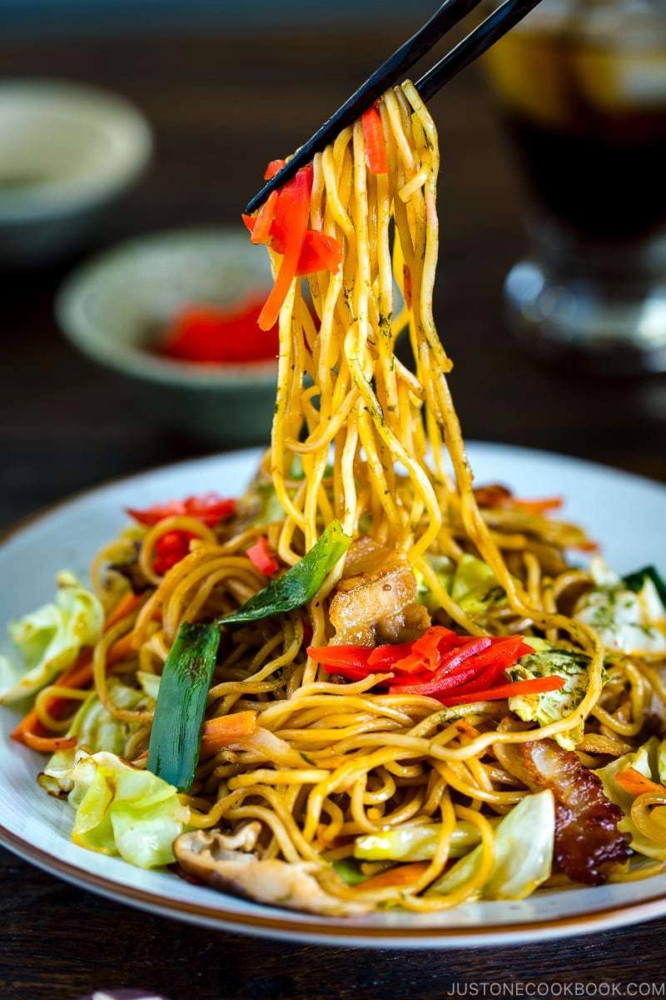
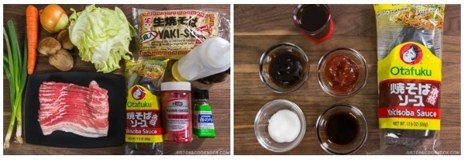
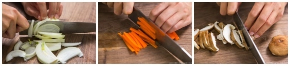
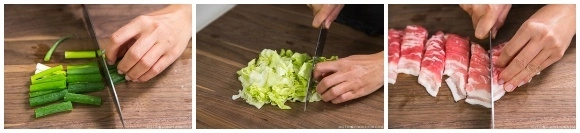
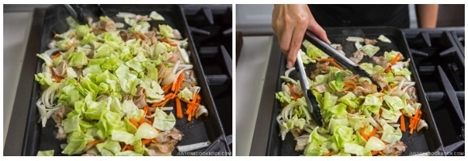
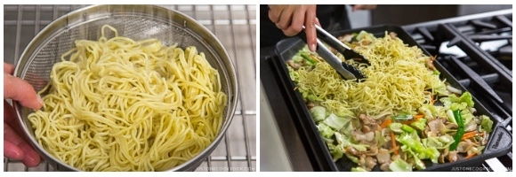
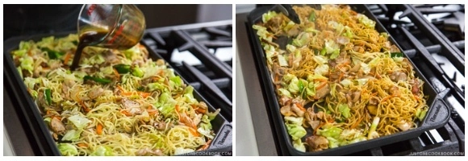

How To Make Yakisoba

Decription
Many of you know “soba” means buckwheat noodles, and that’s correct. However, the word soba in Japanese can also be used to describe noodles of any type. Yakisoba noodles are called Mushi Chukamen (蒸し中華麺 or Steamed Chinese-style noodles). They are made of wheat flour, kansui, and water. Even though the color of noodles is yellowish, they are not egg noodles, and the color is the result of using kansui. Yakisoba noodles are steamed and packaged, so they’re ready for a quick reheat. The texture of these noodles is similar to ramen noodles.
Ingredients

- 1/2 onion
- 1 carrot
- 3 shiitake mushrooms
- 2 scallions
- 4 cabbage leaves
- 3/4 lb of shrimp
- 2 Tbsp vegetable oil
- 3 servings yakisoba noodles
- 4-6 Tbsp yakisoba sauce
Yakisoba Sauce
- 4 Tbsp Worcestershire sauce
- 4 tsp oyster sauce
- 4 tsp ketchup
- 2 tsp sugar
Steps
- Whisk together all the ingredients for the Yakisoba Sauce. It's important to taste the sauce and see if you need to add more sugar.

- Slice the onion, cut the carrot into julienne strips, and slice the shiitake mushrooms.

- Chop the green onions into 2-inch (5 cm) pieces, cut the cabbage into bite-sized pieces, and cut the meat into 1-inch (2.5 cm) pieces.
- In a skillet or wok, heat the oil on medium-high heat. Cook the meat until it's no longer pink.
- Add the onions and carrots and cook for 1-2 minutes.

- Add the cabbage and cook until it's almost tender.
- Lastly, add the green onions and shiitake mushrooms and cook for 1 minute. Season with freshly ground black pepper to taste.

- Transfer the yakisoba noodles to a sieve and quickly run hot water over the noodles. Loosen the noodles with your hands. Add the noodles to the skillet or wok and lower the heat to medium. It’s best to use tongs to combine the noodles and ingredients. Keep an eye on the noodles as they may stick to the skillet/wok.

- Add the Yakisoba Sauce and mix it all together. Add more sauce if needed.
And you're done! Just eat and enjoy :)
via GIPHY